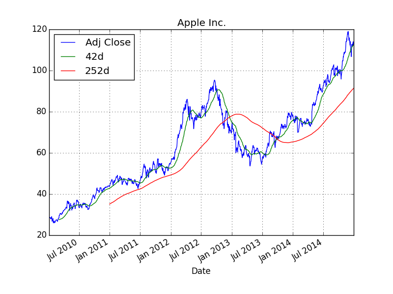

Raspberry Pi for Data Analytics¶
This example is about data analytics with Python (cf. http://python.org) and IPython (cf. http://ipython.org) on the RPi. Before we install it, first install the Python PIP installer by:
sudo apt-get install python-pip python-dev build-essential
Installing Data Analytics Libraries¶
Any serious data analytics effort with Python generally includes to some extent the pandas library (cf. http://pandas.pydata.org). To install it, upgrade the NumPy library first (cf. http://scipy.org):
sudo pip install numpy --upgrade
This might take quite a while (1h+) due to the library being pretty large and the RPi not being that quick in compiling it. Then install pandas:
sudo pip install pandas
This also takes some time (again 1h+). Also install the matplotlib plotting library (with some updates/dependencies) as follows:
sudo easy_install -U distribute
sudo apt-get install libpng-dev libjpeg8-dev libfreetype6-dev
sudo pip install matplotlib
And, oh wonder, this also takes quite a while to install and compile. We might want to install another useful library, namely PyTables (cf. http://pytables.org) for efficient I/O with Python:
sudo pip install numexpr
sudo pip install cython
sudo apt-get install libhdf5-serial-dev
sudo pip install tables
All this taken together takes a few hours in total. However, your patience will pay off: your RPi will be equipped with state-of-the-art Python-based data analytics libraries that can be used then for a wide range of data collection, crunching and storage tasks. Finally, install the IPython interactive analytics environment:
sudo pip install ipython
Interactive Data Analytics¶
Now start IPython on the shell via:
ipython
You should then see something like:
pi@rpi /home/ftp $ ipython
Python 2.7.3 (default, Mar 18 2014, 05:13:23)
Type "copyright", "credits" or "license" for more information.
IPython 2.3.1 -- An enhanced Interactive Python.
? -> Introduction and overview of IPython's features.
%quickref -> Quick reference.
help -> Python's own help system.
object? -> Details about 'object', use 'object??' for extra details.
In [1]:
Now let’s retrieve some stock quotes for the Apple stock:
In [1]: import pandas.io.data as web
In [2]: aapl = web.DataReader('AAPL', data_source='yahoo')
In [3]: aapl.tail()
Out[3]:
Open High Low Close Volume Adj Close
Date
2014-12-23 113.23 113.33 112.46 112.54 26028400 112.54
2014-12-24 112.58 112.71 112.01 112.01 14479600 112.01
2014-12-26 112.10 114.52 112.01 113.99 33721000 113.99
2014-12-29 113.79 114.77 113.70 113.91 27598900 113.91
2014-12-30 113.65 113.91 112.12 112.52 2489300 112.52
Next, let us caculate two different moving averages (42 days & 252 days):
In [4]: import pandas as pd
In [5]: aapl['42d'] = pd.rolling_mean(aapl['Adj Close'], window=42)
In [6]: aapl['252d'] = pd.rolling_mean(aapl['Adj Close'], window=252)
Finally, a plot of the index closing values and the moving averages:
In [7]: import matplotlib.pyplot as plt
In [8]: aapl[['Adj Close', '42d', '252d']].plot(title='Apple Inc.'); plt.savefig('source/aapl.png')
The saved png plot might then look like below.
Via the shell (either directly or via ssh access) such figures cannot be displayed. However, you could imagine to run a Web site on the RPi where the figure is included and displayed via html (see Web Apps with Raspberry Pi). You could also send such a graphical output/result to yourself or someone else e.g. by email or FTP transfer.
Fast I/O Operations¶
When using the RPi for data collection purposes, it might be beneficial to have efficient I/O capabilities available. This is where the PyTables library comes into play. The following is a Python script (download link) that collects stock data for a number of symbols and stores the data on disk in HDF5 format (cf. http://hdfgroup.org).
#
# Collecting and Storing Stock Price Data
# with Python/pandas/PyTables
#
# (c) Dr. Yves J. Hilpisch
# The Python Quants GmbH
#
import os
from time import time
import pandas as pd
import pandas.io.data as web
symbols = ['AAPL', 'YHOO', 'MSFT']
filename = 'data.h5'
#
# Collecting the data
#
t0 = time()
store = {} # dictionary to store DataFrame objects
for sym in symbols:
store[sym] = web.DataReader(sym, data_source='yahoo', start='2000/1/1')
#
# Storing data in HDF5 database
#
t1 = time()
h5 = pd.HDFStore(filename, 'w') # open database file
for sym in symbols:
h5[sym] = store[sym] # write DataFrame to disk
h5.close() # close database
t2 = time()
os.remove(filename) # delete file on disk
#
# Output
#
print "Time needed to collect data in sec. %5.2f" % (t1 - t0)
print "Time needed to store data in sec. %5.2f" % (t2 - t1)
Running the script from the shell yields an output like this:
pi@rpi ~ $ python data_collection.py
Time needed to collect data in sec. 1.61
Time needed to store data in sec. 1.40
The data gathered and stored by this Python script is not that large. The following script (download link) generates a set with pseudo-random sample data which is 80 MB in size and writes it to disk.
#
# Storing a Larger Data Set on Disk
# with Python/pandas/PyTables
#
# (c) Dr. Yves J. Hilpisch
# The Python Quants GmbH
#
import os
from time import time
import numpy as np
import pandas as pd
filename = 'data.h5'
#
# Generating the sample data
#
t0 = time()
data = np.random.standard_normal(10000000) # random data
df = pd.DataFrame(data) # pandas DataFrame object
#
# Storing data in HDF5 database
#
t1 = time()
h5 = pd.HDFStore(filename, 'w') # open database file
h5['data'] = df # write DataFrame to disk
h5.close() # close database file
t2 = time()
os.remove(filename) # delete file on disk
#
# Output
#
print "Size of data set in bytes %d" % data.nbytes
print "Time needed to generate data in sec. %5.2f" % (t1 - t0)
print "Time needed to store data in sec. %5.2f" % (t2 - t1)
Running this script yields an output like follows:
pi@rpi ~ $ python large_data_set.py
Size of data set in bytes 80000000
Time needed to generate data in sec. 10.24
Time needed to store data in sec. 9.39
It takes less than 10 seconds to write 80 MB of data to the SD card (times here might vary significantly depending on the card type used). You see that you can even process larger data sets (although not “big data”) with the RPi.